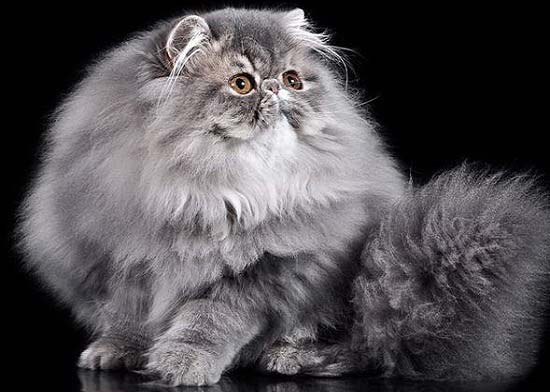

 На наших просторах эта роскошная кошка появилась примерно в 1980 году. Эти длинношерстные кошки были привезены в СССР дипломатами и на протяжении полутора десятилетий были, пожалуй, основными представителями кошачьего мира из ранга «экзотических». Да, «детская» мордочка и облако волшебной шерсти не могли не влюбить в себя мировую общественность. Спустя годы можно сказать, что селекционеры немало сделали для улучшения внешнего вида персов. Сегодня персы могут быть окрашены в сотню (!) разнообразных цветов. Серая, белая, черная, красная, лиловая персиянка уже не вызывает удивления, главное, чтобы сама шерсть была густой, длинной, тонкой шелковичной структуры.